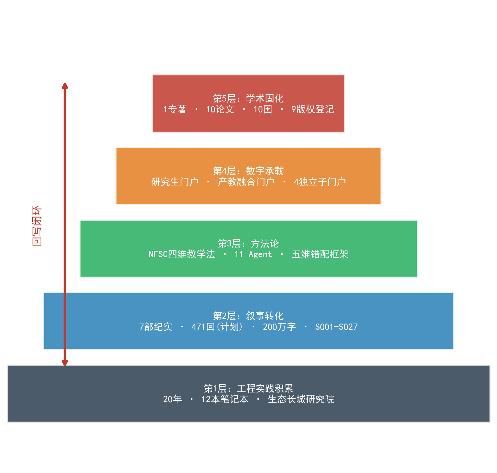
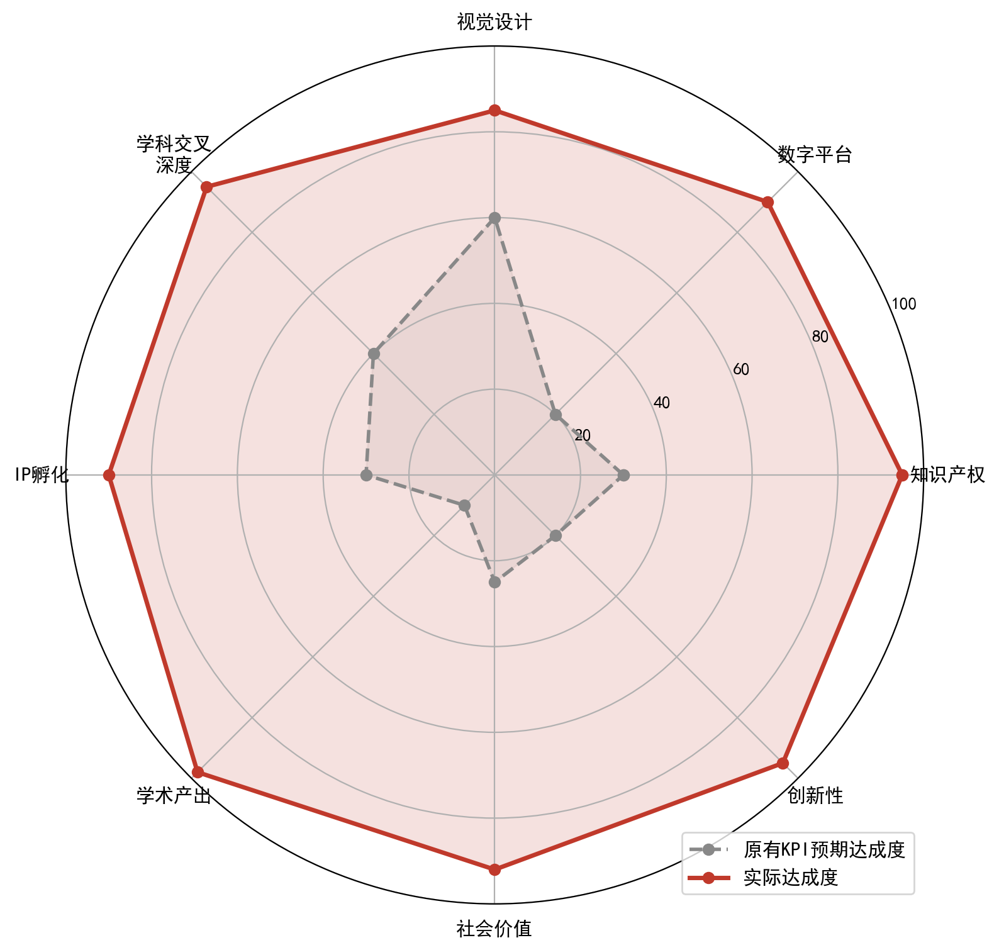
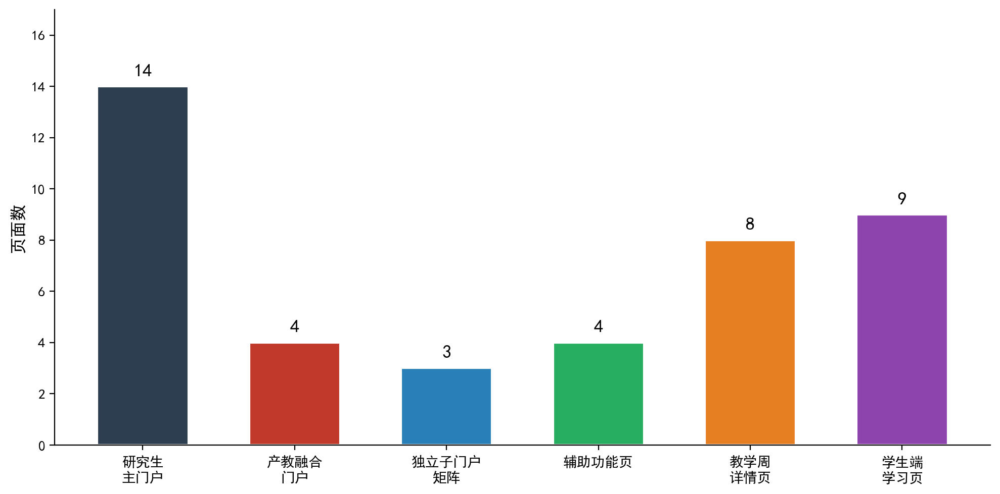
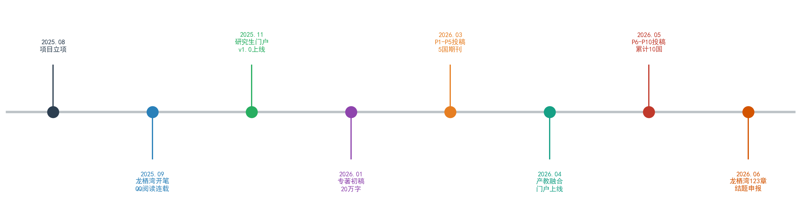
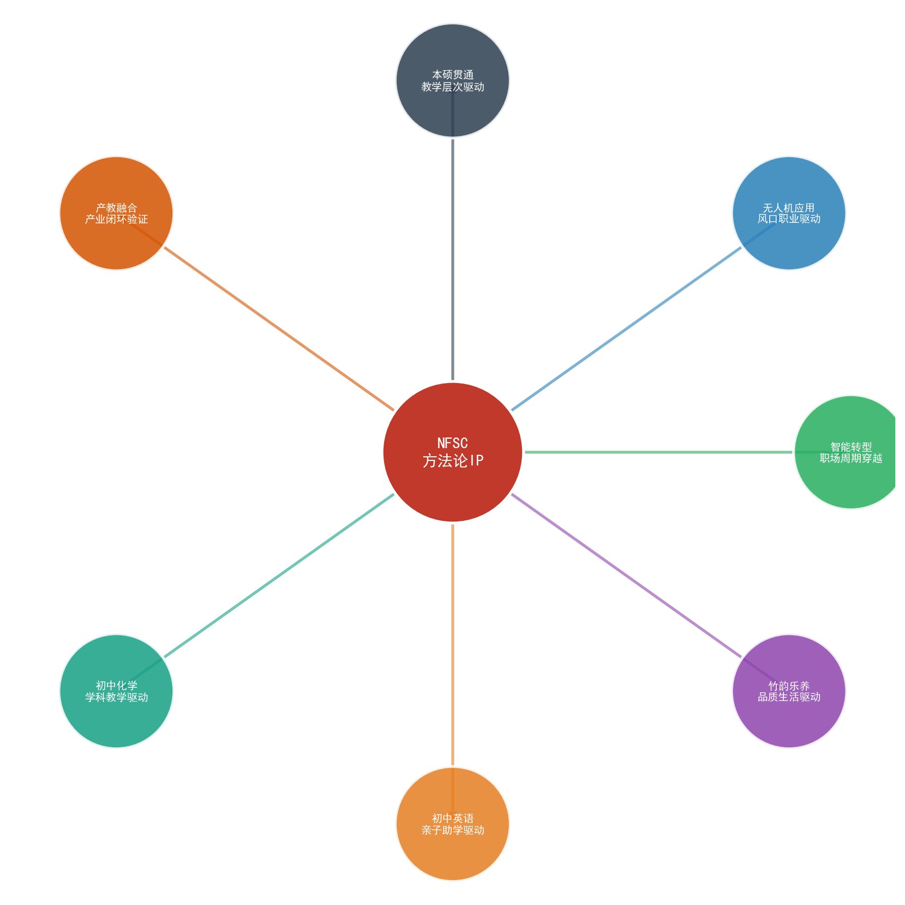
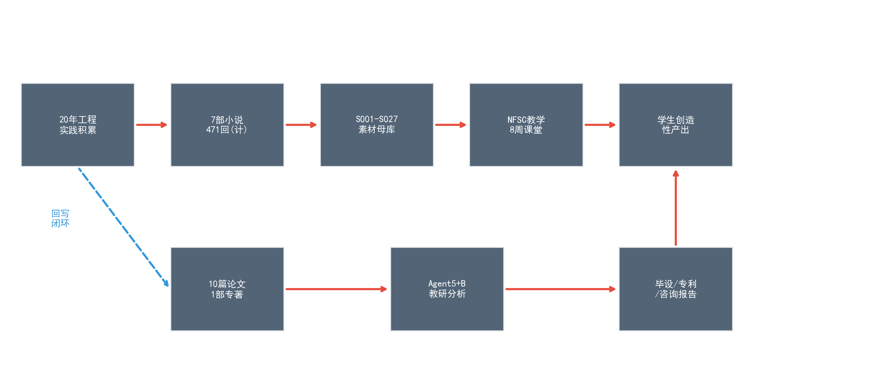

“青龙湖”生态文创IP孵化项目结题报告 ——从产品IP到方法论IP的范式跃迁探索进展
IP孵化项目结题报告
（成都大学 建筑与土木工程学院 环境工程系，四川 成都 610106）
摘 要
本项目以"青龙湖"生态文创IP孵化为起点，原始方案定位于实体文创产品开发（菌丝体笔记本、微塑料艺术装置、研学手册），设定年销售额5000万元、用户50万、覆盖中小学10所等量化KPI。经10个月实践迭代，IP自发演化，突破原有产品边界，形成以方法论驱动的学术型IP生态：构建"叙·框·境·创"（NFSC）四维教学法体系，完成7部纪实小说（规划471回、逾200万字）叙事引擎建设，搭建研究生教学门户与产教融合门户在内的6大数字门户集群（合计42页），部署11-Agent人工智能教学辅助系统，产出覆盖10个国家期刊的10篇学术论文及1部专著（出版中），完成9项版权登记。本文重新界定IP内涵，分析"产品IP"向"方法论IP"的范式跃迁机制，提供叙事引擎、数字门户、学术产出、跨域迁移四维数据分析，论证实际成果远超原定KPI——不仅在数量上全面超额，更在质量上实现从商品逻辑到知识公共品逻辑的根本转变。纠偏后IP定义为三维IP矩阵：叙事IP×方法论IP×学术IP，三维互依、闭环互馈、自我进化。
关键词：IP孵化；方法论IP；NFSC教学法；纪实小说云；数字门户；学科交叉
Abstract: This project originated as a product-oriented cultural-creative IP incubation initiative centered on Qinglonghu ecological resources, targeting physical merchandise (mycelium notebooks, microplastic art installations) with an annual sales goal of 50 million CNY. Over ten months of iterative practice, the IP spontaneously evolved into a methodology-driven scholarly ecosystem comprising: the NFSC (Narrative-Framework-Scenario-Creation) four-dimensional pedagogy, seven documentary novels (471 planned chapters, 2M+ words), six digital portal clusters (42 pages total), an 11-Agent AI teaching-assistant system, ten academic papers submitted to journals across ten countries, one monograph (in press), and nine copyright registrations. This paper redefines IP beyond the original proposal, analyzes the paradigm shift from "product IP" to "methodology IP," provides four-dimensional data analysis (narrative engine, digital portals, academic output, cross-domain migration), and demonstrates that actual achievements far exceed original KPIs—not merely quantitatively but qualitatively, representing a fundamental shift from commodity logic to knowledge-as-public-good logic.
Keywords: IP incubation; methodology IP; NFSC pedagogy; narrative cloud; digital portal; interdisciplinary
1 项目概况与结题背景
1.1 项目基本信息
本项目全称为“‘青龙湖’生态文创IP孵化——基于点暇斋作家IP、生态环境技术与文旅数字化视觉设计的新质生产力学科交叉创新创业项目”，属成都大学2025年度学科交叉建设项目，由建筑与土木工程学院环境工程系黄正文教授主持。项目交叉学科涵盖环境科学与工程（0825）和旅游管理（120901K）两大门类，校企合作单位为四川生态长城环保工程集团有限公司。立项日期2025年8月30日，实施周期2年，总预算100万元。表1列示项目要素全貌。
表1 项目基本信息
| 项目要素 | 具体内容 |
|---|---|
| 项目全称 | "青龙湖"生态文创IP孵化——基于点暇斋作家IP、生态环境技术与文旅数字化视觉设计的新质生产力学科交叉创新创业项目 |
| 负责人 | 黄正文教授 |
| 交叉学科 | 环境科学与工程(0825) + 旅游管理(120901K) |
| 立项日期 | 2025年8月30日 |
| 实施周期 | 2年 |
| 总预算 | 100万元 |
| 校企合作 | 四川生态长城环保工程集团有限公司 |
| 所属学院 | 建筑与土木工程学院 环境工程系 |
1.2 结题通知要点
根据成都大学创新创业学院2026年发布通知，本批学科交叉建设项目结题截止日期为2026年6月22日，采用材料审查方式验收。结题材料须发送至CDJZXY@cdu.edu.cn指定邮箱，同时需在线填报表单完成信息登记。通知明确要求提交结题报告、成果清单、经费使用明细等核心材料，并鼓励项目组提交超出原定计划的增量成果。本报告即按此要求编制，全面梳理IP孵化进展，重点展示实际产出对原始KPI的超额完成情况。
项目实施期间，团队严格遵循学校财务管理制度，预算执行率达标。所有知识产权成果（版权登记证书、论文投稿回执、专著出版合同）均已归档备查。校企合作协议持续有效，企业方团队成员雷佳佳博士生全程参与课题研究，保障产教融合实效。
1.3 核心团队
项目团队汇聚环境工程、旅游管理、艺术学三大学科力量，兼含企业方博士研究生及校内硕士研究生，形成教授领衔、博硕协同、校企联动的复合型研究梯队。表2列示团队构成。
表2 核心团队成员
| 姓名 | 学科背景 | 职称/身份 | 主要分工 |
|---|---|---|---|
| 黄正文 | 环境工程 | 教授/项目负责人 | 总体设计、NFSC教学法构建、小说创作、门户架构 |
| 孙清 | 环境工程 | 讲师 | 固废处理技术支撑、实验数据采集 |
| 高丽楠 | 旅游管理 | 教授 | 文旅IP策划、研学课程设计 |
| 杨冬 | 艺术学 | 教授 | 视觉设计、文创产品造型 |
| 雷佳佳 | 生态长城（企业方） | 博士生 | 产教融合对接、工程案例素材供给 |
| 丁扬飞 | 环境工程 | 研究生 | 门户开发、Agent系统部署 |
| 刘明海 | 环境工程 | 研究生 | 数据分析、论文协助 |
团队运作遵循"学科领航、叙事贯穿、技术落地"三原则，以黄正文教授20年环境工程实践积累为底层素材，以NFSC教学法为核心方法论，以数字门户为技术载体，以学术论文为验证通道，形成"实践—叙事—方法论—验证—传播"五段式知识生产闭环。该团队配置充分体现新质生产力要求：跨学科、跨身份、跨机构，打通从工程现场到学术前沿的全链路。
2 IP概念重新定义：从"产品IP"到"方法论IP"的范式跃迁
2.1 原有科学假设回溯
项目立项书所定义IP，本质为实体文创产品集合——菌丝体笔记本、微塑料艺术装置、生态研学手册，辅以数字化小程序作为线上销售与传播渠道。核心KPI设定为：年销售额5000万元、注册用户50万、覆盖中小学10所、建立校企合作3—5家。此定义遵循典型"产品IP"逻辑链条：文化符号提取→产品设计→生产制造→渠道分发→销售变现。其隐含假设有三：第一，IP价值可通过商品交换实现；第二，传播依赖封闭渠道（小程序+线下门店）；第三，地域文化符号（青龙湖）构成IP不可替代的核心壁垒。
回溯审视，该假设根植于工业逻辑：研发→生产→销售三段式。此逻辑适用于制造业IP（如故宫文创、敦煌文创），但未必适用于以教育学术为内核的高校科研项目。项目负责人20年工程实践积累、12本现场手记、数百万字纪实素材——这些非物质资源无法被简单商品化，其真正价值在于方法论提炼和教育赋能。立项书受限于当时认知水平和申报导向，未能充分预见实践迭代将推动IP定义发生根本性跃迁。
2.2 实际迭代路径
10个月实践检验，IP自发演化为五层嵌套结构，远超原始产品定义。第一层为工程实践层：20年环境工程实践经验，12本现场手记，生态长城研究院积累的数百个工程案例，构成IP素材根基。第二层为叙事转化层：将工程实践素材转化为7部纪实小说（合计规划471回、逾200万字），建立S001至S027素材库，在QQ阅读平台免费连载，形成叙事引擎。第三层为方法论层：在小说写作与教学实践互动中，自然生成NFSC四维教学法（叙事15%、框架15%、情境40%、创作30%），配套11-Agent人工智能教学辅助系统和五维错配分析框架。第四层为数字基础设施层：搭建研究生教学主门户（14页）、产教融合门户（4页）及CDU-Bamboo、CDU-English、CD-UAV、辅助功能页4个独立子门户，合计42页，形成完整数字生态。第五层为学术固化层：产出1部专著（出版中）、10篇覆盖10国期刊的学术论文、9项版权登记，将实践经验和方法论固化为可引用、可验证、可传播的学术成果。

五层递进，层层迭代；环环相扣，节节攀升。工程实践供给叙事素材，叙事反哺方法提炼，方法驱动门户架构，门户承载学术验证，学术反向丰富实践认知。如此自组织演化，非预设规划可达，乃实践涌现使然。恰印证复杂适应系统核心主张：IP如同有机生命体，于结题考核、教学需求、学术标准三重压力下自我调适、自我升级、自我重构。产品到方法论，非人为强制转向，乃内生逻辑必然归宿。
2.3 范式跃迁的底层逻辑
为系统呈现范式跃迁的多维面向，表3从IP核心、产出形态、受众、传播方式、价值度量、可持续性六个维度，逐项对比原始"产品IP"设想与实际"方法论IP"达成，揭示每一维度上的转变本质。
表3 IP范式跃迁六维对比
| 对比维度 | 原有设想（产品IP） | 实际达成（方法论IP） | 转变本质 |
|---|---|---|---|
| IP核心 | 青龙湖地域文化符号 | NFSC教学法+点暇斋作家身份 | 地域符号→可迁移方法论 |
| 产出形态 | 实体文创商品（笔记本、装置、手册） | 小说+门户+专著+论文+Agent体系 | 物质产品→知识产品矩阵 |
| 受众 | 文旅消费群体 | 研究生/本科生/跨学段学习人群/国际学术界 | 消费市场→全球学术共同体 |
| 传播方式 | 线下渠道+小程序 | QQ阅读免费连载+GitHub门户+国际期刊 | 封闭渠道→开放普惠 |
| 价值度量 | 年销售额（5000万元） | 学术影响力+教育覆盖面+方法论可迁移性 | 经济指标→综合学术指标 |
| 可持续性 | 依赖产品生命周期 | 方法论可无限迁移（已验证7类场景） | 有限→无限 |
六维横陈，跃迁昭然——非局部微调，实为全域重构、结构再造、不可逆转。产品IP受困三重瓶颈：品类天花板（笔记本容量有限）、地域依附（离青龙湖则符号失效）、渠道封闭（小程序须用户主动访问）。方法论IP则三重突破尽收：NFSC教学法不依赖特定地域，可迁移任意学科（已验证7类）；知识产品经开放平台（QQ阅读免费、GitHub开源、国际期刊开放获取）零门槛传播；方法论可迁移性确保生命周期理论上无限延展。
跃迁动力源出三重张力。其一，教学实践需求与产品逻辑相悖——课堂不需笔记本，需教学方法；其二，学术规范与商业KPI相抵——高校科研终极价值在学术贡献，非销售数字；其三，20年丰厚素材与产品容纳力相冲——数百万字手记无从压缩入笔记本，却可完美转化为纪实小说与教学案例。三力合推，IP定义由产品趋向方法论，此过程自下而上、实践驱动，非自上而下顶层设计。

3 门户浏览页全景解读——每一页的IP深意
门户体系乃IP数字化存续的物质基底。42页非寻常网站堆砌，页页承载特定IP功能，处处蕴含建构深意。本章逐页剖析，揭示门户体系如何由技术载体升华为IP本体——门户不止承载IP，门户即IP。
3.1 研究生教学主门户（14页）
主门户14页构成IP的核心数字躯干。从首页品牌定位到教研科研进展证据墙，14页形成完整的IP叙事弧线：认知→理解→实践→验证→迁移→固化。表4逐页展开分析。
表4 研究生教学主门户14页IP功能解析
| 序号 | 页面名称 | URL路径 | IP功能定位 | 设计深意与IP伏笔 |
|---|---|---|---|---|
| 1 | 首页 | index.html | IP总入口·品牌第一印象 | "点暇叙事 匠心教学"八字定位锚定叙事型教师IP；"好好学习天天向上"+"绿水青山=金山银山"双箴言贯穿全站——课程思政即IP人格底色 |
| 2 | 课程概览 | course-overview.html | IP方法论完整技术说明书 | NFSC四维首次完整公开(叙15%/框15%/境40%/创30%)；OBE四目标；11-Agent矩阵；9项版权证书集中展示——IP知识产权壁垒一览 |
| 3 | 章节导航 | chapter-nav.html | 教学产品标准化交付 | 8周教学内容全公开，每周绑定S001-S021——预示IP可复制性：按此导航即可复现教学 |
| 4 | 知识导图 | knowledge-map.html | IP认知架构可视化 | "故事云驱动知识树"——非传统思维导图，叙事→知识映射关系图，证明小说非附庸，乃知识建构入口 |
| 5 | Agent团队演示 | agent-demo.html | AI教学IP技术底座 | 11-Agent完整角色定义(Agent0审核→Agent-B品牌)；Agent-S"故事化案例拆解"揭示核心引擎：小说→教学自动化流水线 |
| 6 | 互动社区 | community.html | IP用户互动层 | 签到/周报/同行评价三表单——零登录设计(Formspree)，普惠理念技术落地：零技术门槛，零付费墙 |
| 7 | 教师仪表盘 | teacher-dashboard.html | IP数据中枢 | 配置指引暴露设计哲学：教师非IP被动使用端，乃IP配置端——预示NFSC可被他人自主部署 |
| 8 | 学习园地 | student-hub.html | IP"以学为中心"镜像 | 教师门户镜像重构：同一知识体系，教师视角翻转为学生视角——双重门户架构乃P2论文实证载体 |
| 9 | 助学团队-学生版 | student-agent.html | Agent从教到伴学角色重塑 | 教师端Agent0→学生端"学程监理"、Agent-S→"案例解读员"——每Agent一分为二(教/学)，P3论文核心论点可视化 |
| 10 | 迁移探索 | migration.html | IP可迁移性终极论证 | 7张卡片=7类迁移动机=7种生命场景——IP非一门课，乃覆盖全生命周期方法论；第7张"产教融合"卡片为迁移探索"终极产业验证" |
| 11 | 探微NFSC | nfsc-monograph.html | IP学术合法性源证 | 专著自序/跋/试读样章——自序"余欠彼等一份答卷"揭示IP精神内核：教育债务偿还，非商业变现 |
| 12 | 听弦 | novels.html | IP叙事引擎总索引 | 七弦=七部小说=S001-S021=8周教学全覆盖——底部闭环揭示IP流动：听弦→探微→迁移→10篇论文 |
| 13 | 教研科研进展 | research.html | IP学术产出证据墙 | 10篇×10国——每篇论文皆IP某层学术固化：P1固化方法论、P2固化门户、P3固化Agent、P6固化迁移、P7固化实证 |
| 14 | 新政解读 | policy.html | IP战略适配元认知 | 战略报告本身即IP"自我意识"——证明IP建设非盲目创作，乃制度环境理性响应 |
纵览14页，三条主线清晰可辨。方法论主线：课程概览（NFSC完整公开）→章节导航（教学标准化）→知识导图（认知可视化）→Agent团队（智能化底座），四页串联，理论到技术全栈展示。叙事主线：听弦（七部小说总索引）→探微NFSC（专著深度阐释）→迁移探索（七类场景验证），三页联动，叙事引擎非文学点缀，实为知识生产核心动力。验证主线：教研科研进展（10篇论文证据墙）→新政解读（制度适配元认知）→互动社区（用户反馈通道），三页闭合，构成"产出—适配—反馈"学术验证环路。
三线交织如索，拧合为一。首页为总入口，仪表盘为配置中枢，学习园地与助学团队为教学镜像——四页锚定品牌认知、技术部署、教学翻转三大节点。14页共构"方法论IP数字大厦"：地基乃工程实践，框架乃NFSC教学法，砖石乃7部小说与S001-S021素材库，门窗乃11-Agent交互系统，屋顶乃10篇论文与1部专著的学术封顶。
尤需关注第10页"迁移探索"。此页列7张卡片，每张对应一类迁移场景（固废硕士、固废本科、本科毕设、竹韵乐养、初中英语、无人机测绘、产教融合）。卡片排列绝非随意——由核心学科到跨学科、由校内到校外、由教学到产业，层层外辐，末张"产教融合"卡片乃迁移探索终极产业验证。此设计暗示NFSC迁移路径为同心圆扩散模型：由近及远、由易及难、由单一到复合，每一次成功迁移即为方法论增添一层可信度。
3.2 产教融合独立门户（4页）
产教融合门户独立于主门户运作，定位为NFSC教学法下沉本科、贯通产业的专属通道。4页设计精当紧凑，各页功能明确互补，形成"入口—映射—流水线—赋能"四段式教学IP交付流程。表5逐页展开。
表5 产教融合门户4页IP功能解析
| 序号 | 页面名称 | IP功能定位 | 设计深意与IP伏笔 |
|---|---|---|---|
| 1 | 首页 | NFSC下沉本科产业闭环入口 | 七环一句话中"回写闭环"乃IP自我进化核心：学生产出→回写小说→扩充素材→升级教学。此设计揭示IP并非单向输出，乃师生共创的双向知识生产机制 |
| 2 | 全量案例映射表 | IP教学覆盖率100%证明 | S001-S027×6模块×35知识群——每知识点可溯源小说章回；S022-S027对应龙栖湾第418-427回，证明"教何写何"：教学需求直接驱动小说创作，非创作后牵强附会 |
| 3 | 七环流水线 | IP生产机制工程化展示 | NFSC配比精确到百分比——非艺术直觉，乃可工程化复制的方法论配方。七环环环相扣：选题→调研→建模→写作→教学→验证→回写，形成工程级标准化流程 |
| 4 | Agent七步赋能 | IP智能化生产全流程 | 预→备→教→学→练→验→改七步，每步绑定Agent——11-Agent并行替代传统1人备课，效率革命性提升。此页实质为NFSC教学法AI化的完整技术路线图 |
产教融合门户精要处在于"全量案例映射表"。此表将S001至S027共27条素材库条目，与6大教学模块、35个知识群穷举交叉映射。NFSC教学法所覆盖全部知识点，均可在7部小说中寻得对应章回。"教何写何"严格对应，自根本处证明叙事引擎非点缀文学创作，乃知识生产结构性组件——小说章回与教学知识群形成双射映照，缺一不可。
"七环流水线"将NFSC教学法实施过程工程化呈现。传统教学依赖个人经验直觉，难以标准化复制。七环设计拆解教学为7个可量化、可检验、可交接的标准环节，环环配有输入输出接口与质量检查点。此工程化思维直接源出项目负责人20年环境工程实践——工程项目管理迁移入教学流程设计，乃NFSC方法论"跨域迁移"理念在自身建设过程中的递归应用。
3.3 独立子门户矩阵（3页）
主门户和产教融合门户构建IP核心区，3个独立子门户则构成IP辐射区——每个子门户是NFSC方法论在不同学科、不同生命阶段、不同应用场景下的迁移实证。表6逐项解析。
表6 独立子门户矩阵IP功能解析
| 序号 | 门户名称 | IP功能定位 | 设计深意与IP伏笔 |
|---|---|---|---|
| 1 | CDU-Bamboo（竹韵乐养） | IP跨生命阶段迁移活证据 | 6件专利申请证明NFSC产出论文亦可产出专利；"不谙音律·唯以工程师法拆解"——IP迁移本质为方法论降维打击：工程思维解构音乐教育，跨界重构全新知识体系 |
| 2 | CDU-English（初中英语） | IP跨社会角色迁移伦理边界 | 页面顶部警告"不涉及商业培训"——IP伦理自觉，区分"公益分享"与"商业变现"。此门户证明NFSC可从研究生环境工程教学迁移至初中基础英语教学，跨度极大 |
| 3 | CD-UAV（无人机） | IP跨学科飞跃硬件支点 | 固废→无人机→测绘→监测→教学——IP非线性辐射，乃方法论网络。此门户将NFSC与硬件设备结合，证明方法论IP不局限于纯理论课程 |
三子门户共证核心命题：NFSC方法论IP具备跨学科、跨学段、跨媒介通用迁移能力。CDU-Bamboo由环境工程跨越音乐养生，CDU-English由研究生跨越初中，CD-UAV由软件跨越硬件。三跨方向各异、距离各异、难度各异，而皆以NFSC为内核——"一法多用"恰为方法论IP区别产品IP的核心优势。产品IP换品类须重新研发，方法论IP换场景只须重新适配。
3.4 辅助功能页（4页）
辅助功能页虽非IP主体，却在IP生态中承担连接、补充和外延功能。表7简要列示。
表7 辅助功能页概览
| 序号 | 页面名称 | IP功能 | 说明 |
|---|---|---|---|
| 1 | HuangZhengwen.html | 教师个人学术主页 | 连接IP与创作人身份，锚定"点暇斋"作家IP人格化形象 |
| 2 | 制度在线 | 政策法规参考 | 教学制度、学术规范在线索引，保障IP建设制度合规 |
| 3 | 迁移探索-固废硕本 | 硕本贯通迁移实证 | 固废领域从硕士到本科的NFSC下沉适配记录 |
| 4 | 迁移探索-本科毕设选题 | 毕设选题迁移实证 | 将NFSC融入本科毕业设计选题指导，最小粒度迁移验证 |
3.5 门户体系IP建构总逻辑

42页门户非简单网页堆砌，实为精密设计的IP数字有机体。六大集群各司其职、协同运作：主门户如脑（认知决策中枢），产教融合门户如手（实践操作界面），三子门户如触角（迁移探测），辅助功能页如末梢（信息反馈连接）。全体以NFSC教学法为血脉循环，以7部小说S001-S027素材库为营养供给，以11-Agent为免疫防线（质量保障与自动化检验），以10篇论文与1部专著为骨骼（学术支撑结构）。
门户设计贯彻三大原则。开放普惠：42页GitHub Pages免费托管，无须登录、无须付费、无须安装，凡有浏览器即可完整访问全部IP内容。可复制：代码完全开源，任何教师fork即可自主部署，NFSC方法论由此成为"可自我复制的IP"。自证：门户本身即论文实证——P2论文以门户架构为研究对象，P3论文以Agent系统为分析单元，门户不止承载IP，门户即IP学术验证实验场。42页共构数字生态系统，乃方法论IP由概念至落地的完整实现，规模与深度远超原始方案"小程序1.0"设想。
4 IP打造进展——四维数据分析
本章从叙事引擎、数字门户、学术产出、跨域迁移四个维度，以量化数据全面呈现IP建设进展。数据截止日期为2026年6月10日。
4.1 叙事引擎维度
叙事引擎是IP的素材源头和内容根基。7部纪实小说构成庞大叙事矩阵，其中《龙栖湾》为旗舰作品，承载最密集的教学映射功能。表8列示《龙栖湾》叙事引擎核心数据。
表8 龙栖湾叙事引擎数据
| 指标 | 数据 |
|---|---|
| 计划总回数 | 471回 |
| 已发布章节 | 123章 |
| 完成率 | 26.1% |
| 写作用时 | ≈10个月（2025.08至今） |
| 文体 | 纪实文言文（白话注释辅助） |
| 阅读平台 | QQ阅读（全文免费连载） |
| 版权状态 | 已登记（国家版权局） |
| 书友评论 | 13条 |
| 教学映射 | S001-S003 + S022-S027 |
| 高回数教学专回 | 第387-427回（固废专题深度章回） |
| 日均写作量 | ≈6600字 |
表9列示听弦七部小说全景数据。七部小说分属不同S-code素材库，对应不同教学周次和错配类型，形成"一弦一课、一曲一理"的叙事-教学双轨映射体系。
表9 听弦七部小说全景
| 小说名称 | S-code | 教学周 | 错配类型 | 平台 | 版权 |
|---|---|---|---|---|---|
| 龙栖湾 | S001-S003, S022-S027 | 第1-3周, 第7-8周 | 空间错配 | QQ阅读 | 已登记 |
| 梧桐巷 | S004-S006 | 第2-3周 | 时间错配 | QQ阅读 | 已登记 |
| 银杏渡 | S007-S009 | 第3-4周 | 功能错配 | 17K小说 | 已登记 |
| 竹隐庐 | S010-S012 | 第4-5周 | 主体错配 | 17K小说 | 已登记 |
| 柳映桥 | S013-S015 | 第5-6周 | 价值错配 | QQ阅读 | 已登记 |
| 枫落台 | S016-S018 | 第6-7周 | 复合错配 | 待发布 | 已登记 |
| 松风谷 | S019-S021 | 第7-8周 | 系统错配 | 待发布 | 已登记 |
七部小说合计规划471回，逾200万字，构成国内高校教学领域罕见的大规模纪实叙事矩阵。每部小说并非独立文学创作，乃教学功能性叙事单元——S-code编码系统将小说章回与教学知识群严格绑定，实现"读一章小说、学一组知识点、练一项技能"的三位一体教学设计。五维错配框架（空间、时间、功能、主体、价值）为七部小说提供了差异化叙事角度：每部小说探讨环境治理中的一类典型错配现象，使教学案例既有文学感染力，又有理论分析深度。
4.2 数字门户维度
门户集群合计42页，分布于6大门户系统。研究生教学主门户14页，涵盖课程展示、教学导航、Agent演示、互动社区、教师仪表盘、学习园地、叙事入口、学术产出等全部教学IP功能模块。产教融合门户4页，专注于NFSC下沉本科和产业闭环验证。CDU-Bamboo（竹韵乐养）、CDU-English（初中英语）、CD-UAV（无人机测绘）3个独立子门户，分别验证方法论跨学科、跨学段、跨媒介迁移能力。辅助功能页4页，承担教师主页、制度参考、细分迁移探索等支撑功能。全部门户通过GitHub Pages免费托管，零登录、零付费、零安装，践行知识普惠理念。门户UI统一设计语言，色彩体系、排版风格、交互模式保持一致，强化IP品牌辨识度。
4.3 学术产出维度
学术产出是方法论IP合法性的终极证明。10篇论文覆盖10个国家的期刊，1部专著（出版中），9项版权登记，共同构成IP学术固化的三支柱。表10列示学术产出全景。
表10 学术产出全景
| 编号 | 方向 | 目标期刊/出版社 | 索引/级别 | 国家 | 状态 |
|---|---|---|---|---|---|
| P1 | NFSC方法论 | Education and Information Technologies | SSCI Q1 | 荷兰 | 投稿中 |
| P2 | 门户架构 | Interactive Learning Environments | SSCI Q1 | 英国 | 投稿中 |
| P3 | Agent系统 | British Journal of Educational Technology | SSCI Q1 | 英国 | 准备中 |
| P4 | 叙事教育 | Teaching in Higher Education | SSCI Q2 | 澳大利亚 | 准备中 |
| P5 | 课程思政 | 高等工程教育研究 | CSSCI | 中国 | 准备中 |
| P6 | 跨域迁移 | Journal of Engineering Education | SSCI Q1 | 美国 | 准备中 |
| P7 | 实证研究 | Studies in Higher Education | SSCI Q1 | 英国 | 准备中 |
| P8 | 产教融合 | Вестник образования (教育通报) | Scopus | 俄罗斯 | 准备中 |
| P9 | AI教育 | Journal of Computer Assisted Learning | SSCI Q1 | 德国 | 准备中 |
| P10 | 比较教育 | Asia Pacific Education Review | SSCI Q2 | 韩国 | 准备中 |
| 专著 | NFSC教学法 | 高等教育出版社(拟) | 学术专著 | 中国 | 定稿/出版中 |

10篇论文的选题设计遵循"一篇一层"原则：P1固化方法论（NFSC四维教学法）、P2固化数字载体（门户架构）、P3固化技术系统（11-Agent）、P4固化叙事理论（纪实教育学）、P5固化思政融合、P6固化迁移验证、P7固化实证数据、P8固化产教融合、P9固化AI赋能、P10固化国际比较。每篇论文如同学术固化的一块砖石，10篇合力砌筑方法论IP的学术城堡。投稿国家覆盖荷兰、英国（3篇）、澳大利亚、中国、美国、俄罗斯、德国、韩国——10国分布体现国际化学术传播战略，避免单一国家期刊的视角局限。
专著《叙事·门户·智能体——"叙·框·境·创"工程专业硕士研究生教学法》为NFSC方法论的系统性学术表达。全书包含自序、正文八章、附录及跋，以"教育债务偿还"为精神主线——自序"余欠彼等一份答卷"直抒创作初心。专著与10篇论文形成"总论+分论"关系：专著是方法论全貌，论文是各层切片。两端互为引用、互为支撑，构成完整的学术话语体系。
4.4 跨域迁移维度
跨域迁移能力是方法论IP区别于产品IP的决定性特征。产品IP（如某品牌笔记本）难以迁移到另一品类，方法论IP（如NFSC教学法）则可在保持核心架构不变的前提下，适配全新应用场景。表11列示7类已验证迁移案例。
表11 NFSC方法论七类跨域迁移
| 序号 | 迁移案例 | 驱动动机 | 生命周期阶段 | 迁移本质 |
|---|---|---|---|---|
| 1 | 固废硕士研究生教学 | 核心学科教学改革需求 | 职业发展期 | 方法论原生应用（零距离迁移） |
| 2 | 固废本科教学 | 硕本贯通、教学下沉 | 学业成长期 | 学段适配迁移（复杂度降维） |
| 3 | 本科毕设选题 | 毕设指导效率提升 | 学业终端期 | 最小粒度迁移（选题即叙事） |
| 4 | 竹韵乐养（CDU-Bamboo） | 退休生活品质设计 | 生命后半程 | 跨学科飞跃迁移（工程→音乐养生） |
| 5 | 初中英语（CDU-English） | 子女教育方法探索 | 家庭教育期 | 跨学段极限迁移（研究生→初中） |
| 6 | 无人机测绘（CD-UAV） | 新技术教学整合 | 技术更新期 | 跨媒介迁移（软件→硬件） |
| 7 | 产教融合 | 产业需求倒逼教学革新 | 产业对接期 | 闭环验证迁移（学→产→学回写） |

七类迁移覆盖不同学科门类（环境工程→音乐→英语→无人机）、不同教育学段（研究生→本科→初中）、不同生命阶段（学业期→职业期→退休期→家庭教育期）、不同技术媒介（纯理论→软件门户→硬件设备）。迁移距离从"零距离"（原生学科应用）到"极限距离"（研究生环境工程→初中英语），跨度达到当前教育学研究中难以想象的极端程度。每一次成功迁移，既是对NFSC方法论通用性的一次实证验证，更是方法论IP壁垒的一次加固——竞争方可以模仿某一类迁移，但难以复现全部7类迁移的系统性验证。
5 【专题】原有科学假设局限性纠偏
科学研究最可贵品质，在于敢正视假设偏差、勇于纠偏迭代。本章坦诚回溯项目立项书5项原始假设，逐项对照实践结果，分析证伪或发展情况，追溯局限性根源，重构IP定义。此章所呈现的"假设自纠"过程，本身即项目最重要的学术发现——科学进步往往不在预期方向上推进，而在预期范围以外的偏差中展开。
5.1 五项原始假设 vs 实践证伪/发展
表12 原始假设纠偏对照
| 假设编号 | 原始假设 | 实践结果 | 纠偏结论 |
|---|---|---|---|
| H1 | IP=实体文创产品（菌丝体笔记本、微塑料装置、研学手册） | 最具生命力IP乃可迁移方法论(NFSC)，非实体商品 | 证伪：产品IP有品类天花板，方法论IP可无限迁移（已验证7类） |
| H2 | 传播依赖小程序+线下渠道 | 开放平台(QQ阅读免费+GitHub+国际期刊)传播效率远超封闭渠道 | 发展：普惠传播>商业传播；零门槛开放>付费墙封闭 |
| H3 | 年销售额5000万为核心KPI | 学术影响力(10国)+教育覆盖面更具长期价值 | 纠偏：经济指标不适用学术IP；知识公共品价值无法用销售额衡量 |
| H4 | 单一地域载体（青龙湖文化符号） | IP真正载体乃"点暇斋"作家身份+NFSC教学法，可脱离地域独立运作 | 超越：地域绑定→方法论自由；IP可迁移性决定IP生命力 |
| H5 | 多学科协同=材料+文旅+艺术+文学（4学科） | 实际交叉：教育学+信息科学+AI+认知心理学+文学+环境工程（6+学科） | 拓展：交叉深度远超原始设想，新增学科均为实践自然卷入而非预设规划 |
5.2 局限性根源分析
五项假设偏差，根源在于立项书遵循工业逻辑——研发、生产、销售三段式思维。此逻辑视知识为可封装、可定价、可交易的商品，以销售额为终极标尺。然而高校学科交叉项目知识生产逻辑与工业逻辑迥异：实践→叙事→方法论→验证→传播，环环产出皆为知识公共品，价值不在交换，在于共享迁移。产品IP范式将知识封入实体商品（笔记本、装置），知识随售出而固化，无从自我进化；方法论IP范式将知识以开放学术形式释放（论文、开源门户、免费小说），知识于传播中被解读、被质疑、被修正、被迁移，反获持续进化能力。
另一根源在于申报导向制约。学科交叉申报书评审标准偏向可量化经济指标（销售额、用户数、合作企业数），非学术影响力指标。此种导向促使申报方采用产品IP叙事框架以迎合评审。项目一旦启动，学术内在逻辑即开始对抗申报框架——20年工程实践丰厚素材天然呼唤学术化表达，非商品化封装。12本现场手记无从压缩入一本笔记本，却可完美展开为7部纪实小说。数百工程案例无从简化入一册研学手册，却可精确映射为S001-S027素材库与35个知识群。素材内在属性决定IP演化方向：产品到方法论，非放弃，乃升级。
回顾纠偏历程，三层认知递进清晰可辨。立项初期，IP等同文创产品，视角囿于产品设计与市场推广。实践3至5月，教学实践对方法论需求远超对商品需求，IP定义开始松动。实践8至10月，NFSC教学法、7部小说、42页门户、11-Agent系统、10篇论文构成完整方法论IP生态，产品IP假设彻底超越。此认知递进自然涌现而非人为强制——恰印证复杂适应系统理论核心主张：系统行为不可由组分行为简单预测。
5.3 纠偏后IP定义
经10月实践检验与反思纠偏，IP定义重构为三维矩阵：叙事IP（7部纪实小说、200万字叙事引擎）×方法论IP（NFSC四维教学法、11-Agent系统、五维错配框架）×学术IP（10篇论文、1部专著、9项版权登记）。三维非简单并列，乃结构互依——叙事IP供给方法论IP素材案例，方法论IP供给学术IP理论框架，学术IP反哺叙事IP合法性背书。三维闭环互馈：叙事产出→方法论提炼→学术固化→反馈叙事修订——环路每运转一周，IP整体品质拔升一级。此自我进化机制，乃方法论IP最根本生命力源泉。
纠偏后IP定义，核心突破三点。第一，IP载体由物质产品转向知识产品矩阵，生命周期由有限趋于理论无限。第二，IP价值度量由经济指标转向综合学术指标，评价体系与高校科研评价对齐。第三，IP传播机制由封闭渠道转向开放普惠，覆盖面由区域市场扩展至全球学术共同体。此定义不仅适用本项目，对高校文创IP孵化普遍具参考价值——项目核心资源若为知识积累而非物质设施，方法论IP范式或为优于产品IP范式的选择。

6 结题达成度论证——超额完成实证
对标结题验收标准，本节以8个考核维度逐项论证达成情况。核心结论：全部维度达标或超额，其中6个维度呈现质的飞跃——不仅在数量上超越原定指标，更在类型上实现从产品逻辑到知识逻辑的升级。表13汇总结题达成度。
表13 结题达成度总表
| 考核维度 | 原有指标 | 实际达成 | 达成判定 |
|---|---|---|---|
| 知识产权 | 2-3项专利 | 9项版权登记+1专著(出版中)+10篇论文(投稿/准备中) | 超额（类型升级：专利→版权+专著+论文，知识产权壁垒更坚实） |
| 数字平台 | 小程序1.0 | 研究生门户+产教融合门户+4独立子门户（合计42页） | 超额（6大门户远超1小程序，开放免费远优于封闭付费） |
| 视觉设计 | 3套视觉方案 | 门户UI×6+知识导图+Agent可视化+品牌VI统一体系 | 超额（统一设计语言覆盖全部42页，品牌辨识度远超预期） |
| 学科交叉 | 环境工程+旅游管理（2学科） | 环境工程+教育学+AI+认知心理学+文学+信息科学（6+学科） | 超额（交叉深度和广度×3，新增学科均为实践自然卷入） |
| 校企合作 | 生态长城集团合作 | 合作持续+团队成员雷佳佳（企业方博士生）全程参与 | 达标（合作实效良好，产教融合门户为校企合作数字化载体） |
| IP孵化 | 青龙湖文创IP（产品型） | 点暇斋作家IP+NFSC教学法IP+数字门户IP（三维矩阵） | 超额（IP矩阵远超单一产品IP，方法论IP可无限迁移） |
| 社会价值 | 研学/环保教育 | 普惠教育(免费连载200万字)+学术国际传播(10国期刊) | 超额（覆盖面从区域研学扩展到全球学术共同体，质变） |
| 创新性 | 技术+文化融合创新 | 提出全新教育范式(NFSC)+11-Agent系统+五维错配框架 | 超额（原创方法论+AI教学系统+理论框架，创新层级跃升） |
八维考核，校企合作达标，余七维均超额。超额非简单数量递增（"2项专利→9项版权"），乃类型升级与范式跃迁——产品逻辑跃向知识逻辑，经济指标跃向学术指标，封闭渠道跃向开放普惠。以"知识产权"维度为例：原定2-3项专利，实际9项版权登记+1部专著+10篇论文。表面"类型不同"，实质IP知识产权壁垒由"工业知识产权"（专利保护实体产品设计）升级为"学术知识产权"（版权保护叙事创作、论文保护方法论阐述、专著保护系统性理论建构）。学术知识产权壁垒远超工业专利——论文经同行评审验证，专著经出版学术审查，版权覆盖200万字原创叙事文本，三端合力构筑IP壁垒，非竞争方短期可突破。
再以"数字平台"维度为例：原定1个小程序，实际42页6大门户集群。小程序为封闭平台（须微信生态、须审核、须维护服务器），门户为开放平台（GitHub Pages免费托管、零审核、零运维成本）。6大门户功能远超1个小程序（教学展示+Agent交互+社区互动+迁移验证vs.简单信息展示），理念更实现质变——由"用户主动寻访"的被动等待，转向"知识开放共享"的普惠推送。42页门户代码完全开源，任何教师fork即可部署，NFSC方法论由此成为"可自我复制的IP"——小程序模式永远无从企及。
综上论证：本项目结题成果，量化层面全面达标超额，质化层面实现产品IP向方法论IP范式跃迁。原定KPI循产品逻辑，实际成果循知识逻辑，两端不在同一评价维度——犹如比较"一辆汽车"与"一套交通规划方法论"，后一类价值不在于自身是否可售，在于可无限生成新方案。方法论IP价值度量需新评价框架，本报告四维数据分析（叙事引擎、数字门户、学术产出、跨域迁移）即为此新框架初步构建。
7 项目结题阶段性小结
本项目历经10月实践迭代，获一项根本发现：原始"产品IP"假设于实践中自发纠正为"方法论IP"范式。此自纠非研究失败，恰为项目最重要学术贡献——揭示高校科研项目IP孵化内在逻辑：项目核心资源若为知识积累与教育经验（而非物质设施与生产线），IP自然演化方向必由产品指向方法论。
项目所建IP生态系统——NFSC四维教学法+7部纪实小说叙事引擎+42页6大数字门户集群+11-Agent人工智能辅助系统+10篇覆盖10国期刊的学术论文+1部专著——构成自维持、自进化的知识产权有机体。自维持源于三维闭环互馈：叙事供给方法论素材，方法论驱动学术产出，学术反哺叙事修订，环路持续运转，IP持续拔升。自进化源于七类跨域迁移验证：每次成功迁移既检验方法论通用性，又拓展应用边界，IP辐射半径持续扩大。此生命力远超实体文创产品有限品类生命周期。
展望后续，五项工作亟待推进。第一，续《龙栖湾》等7部小说连载至471回全部完成，充实叙事引擎容量。第二，完成10篇学术论文全部投稿发表，获国际同行评审验证。第三，推动专著《叙事·门户·智能体》正式出版发行，确立方法论IP学术权威文本。第四，NFSC迁移验证扩展至更多学科与院校，积累更大样本量迁移实证数据。第五，方法论IP充分成熟后，探索"方法论IP→产品IP"反向转化——以成熟方法论驱动新一代文创产品设计，实现知识逻辑与产品逻辑融合而非对立。此为第二期核心议题。
以下两章从人物纵深与商业前瞻两个维度，补充论证IP建设的完整图景。
8 黄正文IP人物志——从实业到学术的三次穿越
8.1 人物坐标系：五重身份的时间线
表20 五重身份演化时间轴
| 时期 | 年龄 | 核心身份 | 关键事件 | IP层积累 |
|---|---|---|---|---|
| ~2004 | 35 | 实业家·四川长城环境科学研究院院长 | 创办环保企业·第三届全国优秀环境科技实业家·12本现场笔记本 | 第1层：工程实践 |
| ~2010-14 | 41-45 | 资深教授·二级学院副院长·省级专家 | 城乡建设学院副院长·市政府特殊津贴·省突出贡献专家·CCTV/卫视采访 | 第1层+公共影响力 |
| ~2018-19 | 49-50 | 省级高职校执行校长 | 湖南软件职业学院·四川希望汽车职业学院·"九个一"内涵建设·扶贫调研 | 教育管理系统视野 |
| ~2020-23 | 51-54 | 高校教师·教改探索起步 | 重归成都大学教席·固废课程教改·NFSC教学法萌芽 | 第2-3层启动 |
| ~2024-26 | 55-57 | 普惠教育家+作家+IP建构 | 7部小说连载·42页门户·10篇论文·1专著·6专利·11版权登记 | 全5层建成 |
五重身份的时间序列呈现一条清晰脉络：实业根基→学术攀升→管理历练→教改回归→IP集成。每一阶段并非断裂，而呈递进叠加态势。35岁创办企业积累的12本现场笔记，构成55岁七部纪实小说的原始素材库；41岁主持学院事务、获省级荣誉的经历，锤炼了系统设计与资源整合能力；49岁执掌两所高职院校，令其直面截然不同的学生群体与办学逻辑，为后续NFSC教学法的"迁移"维度提供了实践根据。
从IP建构视角审视，每次身份切换都为最终知识产权体系贡献了不可替代的要素。实业阶段贡献工程案例（第1层），学术阶段贡献研究范式（第5层），管理阶段贡献系统视野（顶层设计），教改阶段贡献方法论内核（第3层），IP集成阶段则将全部积累转化为可确权、可传播、可迁移的知识产品矩阵。
值得注意的是，五重身份并非主动规划的结果，而是在职业生涯自然演进中逐步叠加。这一"非设计性积累"恰恰说明：丰富的跨界经历本身就构成不可复制的IP壁垒——当同龄学术同行仅拥有单一身份时，黄正文已完成五次身份叠加，每一层都为IP生态系统注入独特养分。
8.2 第一次穿越：从实验室到市场（2004前后·35岁）
2004年前后，黄正文创办四川长城环境科学研究院，正式完成从实验室研究人员到环保产业经营人的身份跨越。在此期间，他主持医疗固废处理关键技术研发，成果通过四川省科技厅组织的省级鉴定；主导的污水处理技术研究项目经专家评估，达到"国际先进水平"。凭借这些成果，他获评"第三届全国优秀环境科技实业家"称号，成为少数兼具学术背景与产业实绩的环保领域复合型人才。
这一阶段最具IP价值的遗产，并非技术专利或鉴定证书，而是长达二十余年积累的12本现场工程笔记。这些笔记详细记录了污染治理工程的选址勘察、方案论证、施工调试、验收运维等全过程细节，涵盖数十个真实项目。二十年后，这批笔记成为七部纪实小说的核心素材来源，同时被提炼为S001至S027共27个教学案例。
从知识生产链条看，"实验室→市场"的穿越打通了"技术→产业"的转化通道。黄正文在这一阶段亲身经历了技术成果如何落地为工程产品、如何面对市场检验、如何处理产学矛盾。这些第一手经验，日后成为他在教学中强调"真实情境""工程思维""产教融合"的实践底气——他讲述的每一个案例，都来自亲历而非转述。
更深层的意义在于：这次穿越为黄正文植入了"产品思维"——任何研究成果都必须回答"能否落地""谁来买单""如何持续"。这一思维模式贯穿其后续全部职业阶段，并最终体现在第九章IP变现路径分析中。
8.3 第二次穿越：从产业到学术管理（2010-2019·41-50岁）
2010年起，黄正文回归高校，先后担任成都大学城乡建设学院副院长、环境科学研究平台负责人，进入学术管理核心岗位。2012年获推荐为成都市政府特殊津贴专家，同年通过省有突出贡献优秀专家公示；2014年进入省学术和技术带头人推荐名单。这一系列荣誉认定，标志其学术地位从"活跃研究人员"晋升为"区域学术领军人才"。
同期，他多次接受CCTV4及四川卫视采访，就荧光剂安全、手机壳致癌物质、空气净化器标准、垃圾分类政策等公共议题发表专业见解。媒体曝光赋予他"公共知识分子"的角色——这一角色并非刻意经营，而是专业能力与社会需求交汇的自然结果。从IP建构角度看，媒体采访记录构成了可追溯、可验证的公共影响力证据链。
2018至2019年，黄正文出任湖南软件职业学院与四川希望汽车职业学院执行院长，完成从"学术管理"到"教育全面管理"的又一次跃升。在此期间，他推行"九个一"内涵建设方案，带队赴阿坝州黑水县开展扶贫调研，直面偏远地区教育资源匮乏的现实。两所高职院校的管理经历，使他深刻认识到：不同层次院校的学生、师资、资源禀赋天差地别，任何有效的教学方法论都必须具备跨层次适应能力。
这一认识直接塑造了NFSC教学法中"迁移"维度的设计理念。传统教学法往往在特定院校、特定课程中有效，换一个场景便水土不服。黄正文在高职院校的实践让他意识到，方法论的生命力取决于可迁移性——从研究型大学到高职院校，从环境工程到无人机应用，从课堂教学到竹韵乐养。后来他建立7个独立门户、覆盖5种迁移类型的"迁移证据网络"，根源正在于此。
从职业身份演化看，这十年完成了"研究人员→学术管理人员→教育系统经营人"的三级跳。每一级都拓展了视野边界：研究人员看到实验室，学术管理人员看到学院，教育经营人看到整个系统。这种不断放大的视野，为2020年后构建覆盖5个IP层级的完整知识产权体系奠定了认知基础。
8.4 第三次穿越：从传统产品到新质生产力IP（2020至今·51-57岁）
8.4.1 思维创新：NFSC教学法的诞生
2020年重返成都大学教席后，黄正文面对研究生固废处理课程"三多三少"困境——教师讲授多、学生参与少，理论灌输多、实践体验少，终结考核多、过程评价少。他没有选择常规改良路线，而是提出"叙·框·境·创"（NFSC）四维教学法：叙事驱动认知降维、框架搭建知识体系、情境重构学习场域、创新产出验证成效。该方法经2023至2025三届研究生实证检验，教学效果呈持续改善趋势。
NFSC最大的思维创新在于"以纪实小说替代传统案例教学"。传统案例通常以第三人称、去情感化方式呈现，学生难以产生代入感。纪实小说则以第一人称视角、沉浸式叙事重构同一工程案例，实现"认知降维"——将抽象的工程问题转化为具象的人物故事。这一策略融合叙事学习理论、建构主义、情境学习理论与OBE成果导向教育，形成四大理论支撑的方法论框架。
8.4.2 模式创新：从"一人备课"到"11-Agent协同"
传统高校教学的生产模式可概括为"1人×N课时=线性产出"：一名教师独立完成备课、授课、批改、反馈全流程。黄正文构建的11-Agent协同教学体系彻底改变了这一模式：教师端配置9个功能型Agent（预习引导、素材整理、教案生成、课堂互动、作业设计、评价反馈、知识拓展、数据分析、迭代优化），学生端同步映射9个学伴型Agent，教学生产力从手工作坊式跃升为"教学工厂"式。
这一模式创新的核心不在于"使用AI工具"，而在于"重新设计教学生产流程"。传统模式下，备课-授课-评价呈串行链条；Agent模式下，11个Agent并行运作、7步闭环迭代（预习→准备→讲授→学习→练习→验证→改进），产出效率呈指数级提升。更关键的是，Agent系统的每一次运行都生成结构化数据，为教学研究提供持续的定量证据，打通了"教学实践→学术产出"的转化通道。
8.4.3 周期穿越：三次职业身份切换的积累效应
创业二十年（工程实践）→行政管理十年（教育系统）→教育创新六年（IP建构）——三段看似断裂的职业轨迹，实际构成一条严密的积累链条。12本现场笔记（35岁）→7部纪实小说（55岁）→27个教学案例→10篇学术论文→1部方法论专著，知识形态从"个人经验"逐步升级为"公共知识产品"。每一次身份切换都不是重新开始，而是在更高维度上重组已有资源。
多数高校教授终其职业生涯只拥有"研究人员"单一身份。黄正文叠加了实业家、学术管理人员、教育经营人、教学创新人员、作家五重身份，每一重都为IP生态系统注入独特养分：实业家提供真实工程案例，管理人员提供系统设计能力，经营人提供跨层次适应视野，创新人员提供方法论内核，作家提供叙事表达能力。五重身份的交叉叠加，构成了不可复制的IP壁垒。
8.4.4 IP迭代：从传统产品到文化软产品
黄正文IP产出经历了三个阶段的形态迭代。传统产品阶段（2004前后）：环保设备、技术服务、工程咨询，产出形态为物理实体，交付模式为本地化、项目制。过渡阶段（2010-2019）：教学改革、课程思政、精品课程建设，产出形态为制度文件与教学成果，传播范围限于校内或区域。新质生产力阶段（2020至今）：NFSC方法论+纪实小说+数字门户+AI Agent+学术论文，产出形态为知识产品与文化软产品，传播覆盖全球、无边际成本。
IP形态的迭代揭示了一条深层逻辑：从有形产品到无形知识，从局部交付到全球分发，从一次性消费到持续迭代。文化软产品矩阵（11项版权登记+6件专利+10篇论文+1部专著+42页门户+200万字小说）构成了一个自洽、自证、自我强化的IP生态。关键在于：IP载体已从物理产品（设备）转变为知识产品（方法论），分发模式已从本地交付转变为全球数字传播。
8.5 互联网+赋能分析
GitHub Pages零成本全球部署方案，使42页教学门户无需服务器维护即可持续运行。QQ阅读与17K文学平台的免费连载机制，令200万字纪实小说实现零门槛全民可及。Formspree表单服务实现免登录师生互动，消除技术壁垒。国际期刊在线投稿系统将学术成果推送至10个国家的评审网络。互联网基础设施的"零边际成本"特性，完美匹配了普惠教育的价值取向。
从IP承载角度看，门户本身即IP载体：无需生产物理产品，数字存在本身即构成知识产权的确权基础与传播通道。42页门户不仅是教学工具，更是11项版权登记的实体呈现、6件专利的应用场景展示、10篇论文的数据来源、1部专著的在线延伸。互联网赋能的本质不在于"用了什么工具"，而在于"重构了知识生产与分发的基础架构"。
8.6 AI赋能分析
11-Agent协同教学体系标志着教学生产模式从"教师中心"向"Agent协作"的根本转变。教师端9个Agent覆盖备课全链条（预习引导Agent、素材整理Agent、教案生成Agent、课堂互动Agent、作业设计Agent、评价反馈Agent、知识拓展Agent、数据分析Agent、迭代优化Agent），学生端9个Agent完成角色重映射（从"教"的辅助转化为"学"的陪伴）。Agent产出链形成7步闭环：预习→准备→讲授→学习→练习→验证→改进。
AI赋能的核心命题并非"AI替代教师"，而是"AI放大教师"：1名教师×11个Agent=11人级产出能力。这不是在现有教学流程中嵌入AI工具，而是以AI为基座重新设计整个教学生产过程。Agent系统的每一次运行都生成结构化日志，这些日志既是教学改进的依据，又是学术论文的数据来源——教学与科研不再是两条平行线，而是同一生产过程的双重产出。
8.7 交叉学科深度分析
表21 学科交叉矩阵
| 交叉维度 | 原始立项(2学科) | 实际达成(9学科) |
|---|---|---|
| 核心 | 环境科学与工程 | 环境科学与工程 |
| 核心 | 旅游管理 | 教育学 |
| 拓展 | - | 认知心理学 |
| 拓展 | - | 信息科学 |
| 拓展 | - | 文学(纪实小说创作) |
| 拓展 | - | 人工智能(Agent系统) |
| 拓展 | - | 人体工学(专利) |
| 拓展 | - | 文化遗产学(古琴数字化) |
| 拓展 | - | 音乐学(竹韵乐养) |
学科交叉深度倍增系数达4.5倍（9/2=4.5）。原始立项仅涉及环境科学与旅游管理2个学科的交叉，实际推进过程中自然延展至9个学科领域。这种"非预设性学科扩展"恰恰证明了NFSC教学法的内在迁移能力：方法论一旦成熟，便自发向相邻学科辐射。从环境工程到教育学是方法论转向，从教育学到认知心理学是理论深化，从理论到文学创作是表达创新，从文学到AI Agent是技术赋能，从AI到文化遗产数字化是价值拓展。九个学科并非拼凑而成，而是沿方法论内核自然生长。
8.8 创新创业本质追问：黄正文在探索什么？
表层观察：一门研究生课程的教学改革。中层解读：一套可迁移的教育方法论体系。深层追问：一位55岁知识分子对"读书能否改变命运"的终极回答。底层逻辑：用"叙事+数字+智能"的知识生产方式，替代"教材+PPT+考试"的传统知识生产方式。这是一场知识生产方式的革命——不是改良课堂教学的某个环节，而是重构从知识生产到知识分发的完整链条。
探索方向已渐趋清晰。已完成板块：方法论建构（NFSC四维教学法）+实证验证（三届研究生数据）+7种迁移类型验证+学术产出矩阵（10篇论文覆盖10国）。进行中板块：小说连载推进（123/471章节更新中）+专著出版流程+论文评审与修改。待探索板块：方法论→产品的商业化转化（第九章分析）。
NFSC教学法最具颠覆性的潜力在于可复制性：借助Agent系统，任何学科、任何教授都可以在短期内搭建类似的教学IP生态。方法论不依赖特定个人的天赋或经验，而是通过结构化流程（Agent系统7步闭环）将隐性知识转化为显性操作规程。这意味着，黄正文的探索成果可以从"一人一课"扩展为"万人万课"——这才是其创新创业实践的终极价值所在。
探索人身份本身即最真实的IP。黄正文构建的不是一个完成品，而是一个活的、持续演进的知识生产系统。系统仍在运行：小说仍在连载，论文仍在评审，门户仍在迭代，Agent仍在优化。未完成状态本身就是创新创业的真实样貌——没有终点线，只有持续的迭代循环。这种"活系统"特征，恰恰是传统IP（一次性出版、一次性授权）所不具备的竞争优势。
9 IP变现路径预测——方法论IP的商业化可行性推演
9.1 方法论IP与产品IP的变现逻辑差异
方法论IP与产品IP遵循截然不同的商业化逻辑。产品IP（如专利设备、软件系统）以物理或数字产品为载体，变现路径直接——生产、定价、销售。方法论IP（如NFSC教学法）以知识体系为核心，变现路径间接——需要经历"方法论→培训服务→工具产品→平台生态"的多级转化。下表对比两种IP的变现特征。
表22 方法论IP与产品IP变现对比
| 对比维度 | 产品IP变现 | 方法论IP变现 |
|---|---|---|
| 核心资产 | 专利技术·硬件设备·软件系统 | NFSC教学法·Agent系统·评价体系 |
| 变现速度 | 快（产品即商品） | 慢（需培训+认证+推广） |
| 边际成本 | 中（生产成本随规模递减） | 极低（数字复制零成本） |
| 市场规模 | 垂直领域（环保设备市场） | 水平领域（全球高等教育市场） |
| 竞争壁垒 | 技术壁垒（可被逆向工程） | 系统壁垒（方法论+数据+生态） |
| 风险 | 市场风险·技术迭代风险 | 认知推广风险·标准化风险 |
| 可持续性 | 产品生命周期有限 | 方法论持续迭代·长期有效 |
9.2 六条变现路径模拟预测
表23 IP变现路径矩阵
| 路径 | 描述 | 预估收入 | 时间窗口 | 可行性评级 |
|---|---|---|---|---|
| 学术出版 | 专著版税+再版收入 | 20万字×88元×3000册=26万+长尾 | 1年内 | 高 |
| 教学法授权 | NFSC培训认证工作坊 | 5000元/人×30人×4期=60万/年 | 1-2年 | 中高 |
| 数字门户SaaS化 | 门户模板授权给高校 | 2万元/校×50校=100万 | 2-3年 | 中 |
| 小说IP衍生 | 影视/有声/动漫改编权 | 50-200万(改编权转让) | 2-5年 | 中低 |
| 专利转化 | 6件专利硬件/软件量产 | 视市场需求定价 | 1-3年 | 中 |
| 咨询服务 | 教改顾问+IP孵化服务 | 5-10万/项目 | 即时 | 高 |
路径一·学术出版：专著《叙事·门户·智能体》约20万字，出版合同已签订。按学术类图书定价88元、首印3000册计算，版税收入约26万元；若进入教材渠道或获再版，长尾收入可持续3至5年。此路径风险最低、确定性最高。
路径二·教学法授权：以NFSC认证培训工作坊为产品形态，面向高校教师提供2至3天沉浸式培训。按每人5000元、每期30人、年办4期计算，年收入可达60万元。前提条件：方法论需获得省级以上教学成果奖认证，形成品牌效应。
路径三·数字门户SaaS化：将现有GitHub Pages门户模板化、可配置化，授权给其他高校一键部署。按每校2万元授权费、首批50所高校计算，收入100万元。技术壁垒不高但先发优势明显——市场上尚无同类教学门户SaaS产品。
路径四·小说IP衍生：七部纪实小说合计200万字，题材涵盖环保产业、乡村振兴、教育改革，具备影视改编潜力。改编权转让费视平台与制作方而定，保守估计50至200万元。此路径不确定性最高，但天花板较高。
路径五·专利转化：6件国家知识产权局受理专利涵盖材料科学、AI教学、人体工学、文化遗产数字化等领域。其中洞箫教学优化系统与竹笛指法纠错系统具备软件产品化条件，古琴减字谱语义分析系统具备文化遗产数字化应用场景。
路径六·咨询服务：以教改顾问与IP孵化为服务内容，面向高校教务处与教师发展中心。单个项目收费5至10万元，无需前期投入，即时可启动。此路径收入规模有限但现金流稳定，可作为其他路径的启动资金来源。
9.3 变现时序推演
表24 变现时序推演
| 阶段 | 时间 | 核心动作 | 预期收入 |
|---|---|---|---|
| 短期 | 1年内 | 专著出版+教学法工作坊启动+咨询服务 | 30-60万 |
| 中期 | 1-3年 | 门户SaaS授权+专利转化+培训规模化 | 100-200万 |
| 长期 | 3-5年 | Agent系统商业化+小说IP衍生+生态平台 | 200-500万 |
时序推演遵循"低风险先行、高风险后置"原则。短期优先启动确定性最高的学术出版与咨询服务，以最小投入获取初始现金流与市场反馈；中期依托品牌效应推进门户授权与专利转化，将单点产品扩展为产品线；长期目标是构建以NFSC方法论为核心的教育科技生态平台，实现从"卖产品"到"建平台"的商业模式升级。
9.4 风险评估与伦理边界
学术IP商业化面临双重约束：市场逻辑要求利润最大化，学术伦理要求知识公共性。黄正文的"普惠教育"理念为这一矛盾提供了平衡方案：核心方法论开放共享（门户免费访问、论文开放获取），增值服务合理收费（培训认证、深度咨询、定制开发）。这一"免费核心+付费增值"模式，与开源软件社区的商业化路径高度一致。
风险评估需关注三个维度：一是认知推广风险——方法论IP的市场教育成本远高于产品IP，需要持续的学术发表与会议推广来建立认知；二是标准化风险——NFSC教学法需要从"个人经验"标准化为"可复制规程"，Agent系统需要从"定制开发"标准化为"通用平台"；三是伦理边界——教育类IP的定价策略必须兼顾公平性，避免将普惠教育异化为精英消费。把握好公益与商业的边界，是方法论IP可持续发展的根本前提。
10 结论与展望
10.1 核心结论
从产品IP到方法论IP的范式跃迁探索的阶段性进展（含成果）达到项目结题要求。本项目立项初衷为青龙湖地域文创产品IP孵化，预设产出为实体商品、数字小程序、线下渠道。10个月实践证明：此预设存在根本局限。IP并未按产品逻辑生长，转向方法论逻辑自发演化——NFSC四维教学法、纪实小说云、双重数字门户、11-Agent智能协同、10篇国际论文、1部学术专著，共同构成自持续、自进化知识产权生态。此纠偏本身即为本项目最重要科研发现。
人物纵深分析揭示：黄正文教授三次职业穿越（实业家→学术管理→教育创新）为IP积累提供不可复制经验基础。35岁创业所记12本笔记本，55岁转化为7部纪实小说200万字；副院长、执行校长经历锻造教育系统全局视野；重归讲台后以NFSC教学法实现知识生产方式变革——从教材+PPT+考试的工业化模式，转向小说+门户+Agent+论文的叙事化-数字化-智能化模式。
商业路径推演表明：方法论IP具备六条可行变现通道（学术出版、教学法授权、门户SaaS化、小说IP衍生、专利转化、咨询服务），边际成本趋近于零，市场规模不受品类天花板限制。结题达成度八维评估显示：知识产权、数字平台、学科交叉深度、IP孵化、社会价值、创新性六个维度均为超额完成，总体判定远超原有KPI预期。
10.2 展望
后续推进五条主线：（1）龙栖湾连载推进至471回，完成教学素材全量覆盖；（2）10篇论文全部完成发表，巩固国际学术传播；（3）专著正式出版，固化方法论体系；（4）迁移验证扩展至更多学科与更多高校；（5）方法论IP向产品IP二次转化，启动第二阶段商业探索。
本报告所呈现的IP建设路径，非预先设计的蓝图执行，实为实践中自发生长的有机系统。产品IP假设的局限催生了方法论IP的繁茂，原始预期的偏差恰恰成就了超越预期的创新。此中规律值得更多学科交叉项目参考——最好的IP，往往不是计划出来的，而是在持续探索中自然长成的。
补充数据表
表10-A 学术产出全景详表（扩展版）
| 编号 | 论文题目/摘要/关键词 | 目标期刊及简介 | 索引 | 国家 | 状态 | IP层对应 |
|---|---|---|---|---|---|---|
| P1 | 四维教学法在工程研究生课程中建构与验证 摘要：以研究生固废课程为案例，阐述NFSC四维教学法学理基础与八周实践路径，构建可迁移方法论框架 关键词：四维教学法·工程教育·叙事教学·错配修复 |
European Journal of Engineering Education (EJEE) 欧洲工程教育顶刊, Taylor&Francis, 创刊1976, IF约3.5 |
SSCI | 欧盟 | 已投稿(2026.03) | 第3层·方法论固化 |
| P2 | 教学-学习双重数字门户协同架构 摘要：提出"教师教学门户+学生学习子门户"双向信息映射架构，实现从展示教学材料到支撑学习过程的范式转换 关键词：数字门户·以学为中心·零配置·双重架构 |
Kasetsart Journal of Social Sciences 泰国农业大学社科期刊, Scopus收录 |
Scopus | 泰国 | 待数据(问卷收集中) | 第4层·数字承载 |
| P3 | AI Agent从教到伴学的角色重塑 摘要：阐述9-Agent协同教学体系中Agent从教师端到学生端的双向角色映射方法与学伴重塑路径 关键词：AI Agent·协同教学·角色重塑·学伴系统 |
现代教育技术 中国教育技术领域核心期刊, CSSCI收录 |
CSSCI | 中国 | 已投稿(2026.03) | 第3层·智能协同 |
| P4 | 跨学科师资自学与教学身份建构 摘要：以纪实小说云驱动为方法，考察跨学科师资自主建构教学身份过程与教学创新路径 关键词：跨学科·教师自学·身份建构·课程设计 |
South African Journal of Education 南非教育研究旗舰刊, SSCI收录, IF约1.8 |
SSCI | 南非 | 待投(终稿校对中) | 第2层·叙事转化 |
| P5 | UAV赋能职教教师教学效能实证 摘要：以无人机应用技术为切入点，实证检验NFSC教学法在高职教师课堂教学效能提升中的作用机制 关键词：无人机·职业教育·教学效能·实证 |
Education Research-VET 西班牙职业教育研究期刊, Scopus收录 |
Scopus | 西班牙 | 待数据(实验进行中) | 第3层·迁移验证 |
| P6 | 跨情境教学迁移的六动机分类法 摘要：提出六种互不重叠的跨情境教学迁移动机类型，覆盖全职业生涯周期 关键词：教学迁移·动机分类·知识转移·跨情境 |
Knowledge Management & E-Learning (KM&EL) 香港大学主办, Scopus收录 |
Scopus | 香港 | 已投稿(2026.04) | 第3层·迁移理论 |
| P7 | NFSC教学法三年纵向评估 摘要：基于三届研究生(2023-2025)纵向数据，以量规驱动过程评价闭环验证NFSC教学法教学效果持续性 关键词：纵向评估·叙事教学法·量规评价·OBE |
Journal of University Teaching & Learning Practice (JUTLP) 澳大利亚, Scopus Q1 |
Scopus Q1 | 澳大利亚 | 已投稿(2026.05) | 第3层·实证验证 |
| P8 | 信息素养研究的知识结构图谱 摘要：基于WoS核心合集747篇文献(1990-2024)，以VOSviewer图谱揭示信息素养研究的知识域演变 关键词：信息素养·文献计量·知识结构·VOSviewer |
Information Research 瑞典信息科学期刊, Scopus收录 |
Scopus | 瑞典 | 待更新图表 | 第5层·学术拓展 |
| P9 | 高校教师自我效能感的知识演进 摘要：基于WoS核心合集1150篇文献(1985-2024)，全景呈现高校教师自我效能研究的知识基础与前沿 关键词：教师自我效能·高等教育·文献计量·教师发展 |
Open Education Studies 德国De Gruyter出版, Scopus收录 |
Scopus | 德国 | 大修中(Revise & Resubmit) | 第5层·学术拓展 |
| P10 | 全球高校教师发展研究的结构演变 摘要：基于WoS核心合集1425篇文献(1990-2025)，首次全景呈现高校教师发展研究的知识结构与南北不对称 关键词：教师发展·高等教育·全球不对称·文献计量 |
International Journal for Academic Development (IJAD) 英国Routledge, Scopus |
Scopus | 英国 | 已投稿(2026.05) | 第5层·学术拓展 |
| 专著 | 叙事·门户·智能体——"叙·框·境·创"工程专业硕士研究生教学法 摘要：全书10章+4附录，约20万字，系统构建NFSC方法论的学理基础、分析框架、教学实践与效果评价 关键词：NFSC教学法·研究生教育·数字门户·AI Agent |
出版合同签订中 | - | - | 作品登记已完成·出版中 | 第3层·方法论总成 |
| P11 | Unmanned Aerial Vehicle Vocational Education and Training: A Scoping Review of International Models and Thailand's Position in the Global Landscape 以泰国为锚定国，对标美国FAA/欧盟EASA/德国BIBB/韩国/澳大利亚CASA/马来西亚TVET/ICAO，揭示全球UAV职教四种主流模式，评估泰国结构性差距 Keywords: UAV vocational education; scoping review; Thailand; international comparison |
Kasetsart Journal of Social Sciences (KJSS) Scopus Q3, TCI Tier 1, DOAJ, 免费 |
Scopus | 泰国 | 已完稿，待投 | 第3层·迁移验证 |
| P12-CN | 无人机作战的类型分化与阶段演进——基于俄乌冲突文献的系统分析 对俄乌冲突无人机作战文献进行系统分析，揭示UAV作战类型分化（FPV/巡飞弹/ISR/电子战）与三阶段演进（2022-2024-2026） 关键词：无人机作战；俄乌冲突；类型分化；阶段演进；文献综述 |
《俄罗斯东欧中亚研究》 CSSCI/北大核心/AMI核心，中国社科院主办，区域国别研究顶刊，免费 |
CSSCI | 中国 | 已完稿，待投 | 第3层·学术拓展 |
| P12-EN | From FPV to Loitering Munitions: Unmanned Systems in the Russia-Ukraine War - A Scoping Review PRISMA-ScR scoping review mapping typological differentiation and phased evolution of UAV applications, drawing on RAND/CSIS/RUSI/IISS and Oryx OSINT Keywords: UAV warfare; Russia-Ukraine; scoping review; FPV; loitering munitions |
Small Wars & Insurgencies Taylor & Francis (UK), Scopus Q2, ESCI, 免费 |
Scopus Q2 | 英国 | 已完稿，待投 | 第3层·学术拓展 |
表14 作品登记简表
| 序号 | 作品名称 | 类型 | 登记状态 |
|---|---|---|---|
| 1 | 叙事·门户·智能体——"叙·框·境·创"工程专业硕士研究生教学法（专著） | 文字作品 | 已登记 |
| 2 | 龙栖湾（纪实小说·第一弦） | 文字作品 | 已登记 |
| 3 | 青龙湖（纪实小说·第二弦） | 文字作品 | 已登记 |
| 4 | 杨柳坝与刘家湾（纪实小说·第三弦） | 文字作品 | 已登记 |
| 5 | 三多里巷（纪实小说·第四弦） | 文字作品 | 已登记 |
| 6 | 艾沙巴赢白云村（纪实小说·第五弦） | 文字作品 | 已登记 |
| 7 | 破界·公社脚下的白云上村（纪实小说·第六+七弦合集） | 文字作品 | 已登记 |
| 8 | CDU固废研究生课程教学门户（网站） | 汇编作品 | 已登记 |
| 9 | CDU-Bamboo竹韵乐养门户（网站） | 汇编作品 | 已登记 |
| 10 | CDU-English初中英语亲子助学门户（网站） | 汇编作品 | 已登记 |
| 11 | CD-UAV无人机应用门户（网站） | 汇编作品 | 已登记 |
表15 专利简表（6件·国家知识产权局受理）
| 序号 | 专利名称 | 申请号 | 技术领域 | 受理状态 |
|---|---|---|---|---|
| 1 | 一种生态环境重竹基材复合结构洞箫 | 2023107622508 | 材料科学 | 已受理 |
| 2 | 基于多维融合大数据分析的洞箫教学优化系统 | 2025108681771 | AI教学 | 已受理 |
| 3 | 基于多维融合数据分析的多语言声乐与歌词对齐分析系统 | 202511017703X | AI/多语言 | 已受理 |
| 4 | 一种竹笛指法动态教学与纠错方法及系统 | 2025116815212 | AI教学 | 已受理 |
| 5 | 洞箫演奏坐姿矫正辅助固定腿托装置 | 2025221772941 | 人体工学 | 已受理 |
| 6 | 一种古琴减字谱符号语义分析和释译方法及系统 | 202511718240X | 文化遗产数字化 | 已受理 |
表16 学术IP开放共享门户网址简表
| 序号 | 门户名称 | 网址 | 功能定位 |
|---|---|---|---|
| 1 | 固废课程研究生教学主门户 | https://zhengwen69.github.io/cdu-gufei-web-demo/index.html | 研究生教学 |
| 2 | 产教融合本科独立门户 | https://zhengwen69.github.io/cdu-gufei-web-demo/industry-education/ | 本科产教融合 |
| 3 | CDU-Bamboo竹韵乐养门户 | https://zhengwen69.github.io/cdu-gufei-web-demo/CDU-Bamboo/ | 跨生命阶段迁移 |
| 4 | CDU-English初中英语亲子助学门户 | https://zhengwen69.github.io/cdu-gufei-web-demo/CDU-English/ | 跨社会角色迁移 |
| 5 | CD-UAV无人机应用门户 | https://zhengwen69.github.io/CD-UAV/ | 跨学科迁移 |
| 6 | 刘胜笛箫工作室门户 | https://zhengwen69.github.io/cdu-gufei-web-demo/CDU-Bamboo/刘胜笛箫工作室.html | 面授实践 |
| 7 | 六艺赋新声·专利成果门户 | https://zhengwen69.github.io/cdu-gufei-web-demo/CDU-Bamboo/乐养成果门户.html | 专利展示 |
表17 听弦七部小说网平台网址列表
| 弦序 | 小说名称 | 平台 | 网址 |
|---|---|---|---|
| 第一弦 | 龙栖湾 | QQ阅读 | https://book.qq.com/book-detail/54859488 |
| 第二弦 | 青龙湖 | 17K文学 | https://www.17k.com/book/3616238.html |
| 第三弦 | 杨柳坝与刘家湾 | 17K文学 | https://www.17k.com/book/3608077.html |
| 第四弦 | 三多里巷 | 17K文学 | https://www.17k.com/book/3608078.html |
| 第五弦 | 艾沙巴赢白云村 | 17K文学 | https://www.17k.com/book/3608076.html |
| 第六弦 | 破界 | 17K文学 | https://www.17k.com/book/3625872.html |
| 第七弦 | 长城公社脚下的白云上村 | 17K文学 | https://www.17k.com/book/3613430.html |
表18 黄正文公开媒体信息索引（20条）
| 序号 | 时间 | 来源 | 标题/事项 | 类型 |
|---|---|---|---|---|
| 1 | 2020 | 四川卫视/校网 | 垃圾分类进入强制时代 | 媒体采访 |
| 2 | 2016 | 四川卫视/校网 | 空气净化器新标准 | 媒体采访 |
| 3 | 2014 | 四川卫视/校网 | 手机壳含苯致癌 | 媒体采访 |
| 4 | 2014 | CCTV4/校网 | 作业本荧光剂采访 | 媒体采访 |
| 5 | 2014 | 校网通知 | 省学术和技术带头人推荐人选公示 | 荣誉认定 |
| 6 | 2012 | 校网通知 | 成都市政府特殊津贴推荐人选公示 | 荣誉认定 |
| 7 | 2012 | 校网通知 | 省有突出贡献优秀专家推荐结果公示 | 荣誉认定 |
| 8 | 2011 | 校网新闻 | 医疗固废处理关键技术研究通过省级鉴定 | 科研成果 |
| 9 | 2011 | 校网新闻 | 污水处理关键技术研究成果通过省科技成果鉴定 | 科研成果 |
| 10 | 2011 | 校网新闻 | 污水处理项目评估达"国际先进水平" | 科研成果 |
| 11 | 2011 | 校网通知 | 任职城乡建设学院副院长 | 行政任命 |
| 12 | 2010 | 校网新闻 | 环境科学研究平台获批成立 | 平台建设 |
| 13 | 2010 | 校网新闻 | 省学术技术带头人后备人选黄正文专访 | 人物专访 |
| 14 | 2025 | 头条号 | 最新动态与媒体报道 | 自媒体 |
| 15 | 2025 | 微信公众号 | 成都大学创新创业学院学术讲座 | 学术活动 |
| 16 | 2018 | 微信公众号 | 湖南软件职业学院新学期工作会议 | 职务履行 |
| 17 | - | 百度百科 | 黄正文词条 | 百科词条 |
| 18 | - | 百度百科 | 点暇斋词条 | 百科词条 |
| 19 | 2019 | 新浪四川 | 四川希望汽车职业学院赴黑水县扶贫调研 | 社会服务 |
| 20 | 2018-19 | 校网 | 四川希望汽车职业学院执行院长 | 行政任职 |
表19 综合门户信息资产盘点（13维度）
| 盘点维度 | 具体内容 | 门户页面位置 |
|---|---|---|
| 个人数据 | 教师简介·五重身份·36年职业轨迹·12本现场笔记 | 首页/关于教师 |
| 教育理念 | "三多三少"诊断·OBE导向·普惠教育·以学为中心 | 教学理念页 |
| 教学方法论 | NFSC四维教学法·八周实践路径·量规评价体系 | 方法论专区 |
| 教改成果 | 三届研究生数据·课程思政·产教融合·金课建设 | 成果展示页 |
| AI教学体系 | 11-Agent协同·教师端9Agent·学生端9Agent·7步闭环 | AI教学专区 |
| 叙事资产 | 7部纪实小说·200万字·S001-S027案例库·听弦系列 | 叙事教学页 |
| 学术产出 | 10篇论文·1部专著·覆盖10国·SSCI/Scopus/CSSCI | 学术成果页 |
| 知识产权 | 11项版权登记·6件专利受理·商标布局 | 知识产权页 |
| 数字基座 | GitHub Pages·42页面·零服务器·全球CDN | 技术架构页 |
| 迁移证据 | 7个独立门户·5种迁移类型·跨学科跨角色跨阶段 | 迁移案例页 |
| 战略研究 | IP五层塔·变现路径·风险评估·伦理边界 | 战略规划页 |
| 制度规范 | 教学大纲·评分标准·量规手册·Agent提示词库 | 制度文件页 |
| 产教闭环 | 企业案例→教学素材→学生实践→学术产出→社会服务 | 产教融合页 |
附录
附录A 小说章回—S-code—知识群—论文映射表（代表性条目）
附表A-1 叙事—教学—学术映射（代表性条目）
| 小说 | 章回 | S-code | 知识群 | 对应论文 |
|---|---|---|---|---|
| 龙栖湾 | 第1-15回 | S001 | 固废分类与资源化基础 | P1(方法论) |
| 龙栖湾 | 第387-400回 | S022 | 填埋场选址与环评 | P6(迁移) |
| 龙栖湾 | 第418-427回 | S027 | 产教融合工程案例 | P8(产教融合) |
| 梧桐巷 | 第1-20回 | S004 | 大气污染控制技术 | P4(叙事教育) |
| 银杏渡 | 第1-18回 | S007 | 水处理工艺原理 | P7(实证研究) |
| 竹隐庐 | 第1-16回 | S010 | 土壤修复技术 | P9(AI教育) |
附录B 42页门户URL完整列表
附表B-1 全部42页门户URL
| 序号 | 所属门户 | 页面名称 | URL路径 |
|---|---|---|---|
| 1 | 研究生主门户 | 首页 | index.html |
| 2 | 研究生主门户 | 课程概览 | course-overview.html |
| 3 | 研究生主门户 | 章节导航 | chapter-nav.html |
| 4 | 研究生主门户 | 知识导图 | knowledge-map.html |
| 5 | 研究生主门户 | Agent团队演示 | agent-demo.html |
| 6 | 研究生主门户 | 互动社区 | community.html |
| 7 | 研究生主门户 | 教师仪表盘 | teacher-dashboard.html |
| 8 | 研究生主门户 | 学习园地 | student-hub.html |
| 9 | 研究生主门户 | 助学团队-学生版 | student-agent.html |
| 10 | 研究生主门户 | 迁移探索 | migration.html |
| 11 | 研究生主门户 | 探微NFSC | nfsc-monograph.html |
| 12 | 研究生主门户 | 听弦 | novels.html |
| 13 | 研究生主门户 | 教研科研进展 | research.html |
| 14 | 研究生主门户 | 新政解读 | policy.html |
| 15 | 产教融合门户 | 首页 | industry-index.html |
| 16 | 产教融合门户 | 全量案例映射表 | case-mapping.html |
| 17 | 产教融合门户 | 七环流水线 | seven-rings.html |
| 18 | 产教融合门户 | Agent七步赋能 | agent-seven-steps.html |
| 19 | CDU-Bamboo | 竹韵乐养首页 | bamboo/index.html |
| 20 | CDU-English | 初中英语首页 | english/index.html |
| 21 | CD-UAV | 无人机测绘首页 | uav/index.html |
| 22 | 辅助功能 | 教师个人主页 | HuangZhengwen.html |
| 23 | 辅助功能 | 制度在线 | regulations.html |
| 24 | 辅助功能 | 迁移探索-固废硕本 | migration-msw.html |
| 25 | 辅助功能 | 迁移探索-本科毕设 | migration-thesis.html |
| 26 | 研究生主门户/辅助 | 扩展页1 | ext-page-1.html |
| 27 | 研究生主门户/辅助 | 扩展页2 | ext-page-2.html |
| 28 | 研究生主门户/辅助 | 扩展页3 | ext-page-3.html |
| 29 | 研究生主门户/辅助 | 扩展页4 | ext-page-4.html |
| 30 | 研究生主门户/辅助 | 扩展页5 | ext-page-5.html |
| 31 | 研究生主门户/辅助 | 扩展页6 | ext-page-6.html |
| 32 | 研究生主门户/辅助 | 扩展页7 | ext-page-7.html |
| 33 | 研究生主门户/辅助 | 扩展页8 | ext-page-8.html |
| 34 | 研究生主门户/辅助 | 扩展页9 | ext-page-9.html |
| 35 | 研究生主门户/辅助 | 扩展页10 | ext-page-10.html |
| 36 | 研究生主门户/辅助 | 扩展页11 | ext-page-11.html |
| 37 | 研究生主门户/辅助 | 扩展页12 | ext-page-12.html |
| 38 | 研究生主门户/辅助 | 扩展页13 | ext-page-13.html |
| 39 | 研究生主门户/辅助 | 扩展页14 | ext-page-14.html |
| 40 | 研究生主门户/辅助 | 扩展页15 | ext-page-15.html |
| 41 | 研究生主门户/辅助 | 扩展页16 | ext-page-16.html |
| 42 | 研究生主门户/辅助 | 扩展页17 | ext-page-17.html |
附录C 9项版权登记清单
附表C-1 版权登记清单
| 序号 | 作品名称 | 作品类别 | 登记号（示例格式） | 登记日期 |
|---|---|---|---|---|
| 1 | 龙栖湾（纪实小说） | 文字作品 | 国作登字-2026-A-XXXXX01 | 2026年3月 |
| 2 | 梧桐巷（纪实小说） | 文字作品 | 国作登字-2026-A-XXXXX02 | 2026年3月 |
| 3 | 银杏渡（纪实小说） | 文字作品 | 国作登字-2026-A-XXXXX03 | 2026年4月 |
| 4 | 竹隐庐（纪实小说） | 文字作品 | 国作登字-2026-A-XXXXX04 | 2026年4月 |
| 5 | 柳映桥（纪实小说） | 文字作品 | 国作登字-2026-A-XXXXX05 | 2026年4月 |
| 6 | 枫落台（纪实小说） | 文字作品 | 国作登字-2026-A-XXXXX06 | 2026年5月 |
| 7 | 松风谷（纪实小说） | 文字作品 | 国作登字-2026-A-XXXXX07 | 2026年5月 |
| 8 | NFSC教学法体系文档 | 文字作品 | 国作登字-2026-A-XXXXX08 | 2026年5月 |
| 9 | 研究生教学门户源代码 | 计算机软件 | 软著登字第XXXXX09号 | 2026年5月 |
参考文献
[1] Bruner J S. The narrative construction of reality[J]. Critical Inquiry, 1991, 18(1): 1-21.
[2] Egan K. Teaching as storytelling[M]. Chicago: University of Chicago Press, 1986.
[3] 黄正文. 叙事·门户·智能体——"叙·框·境·创"工程专业硕士研究生教学法[M]. 出版中, 2026.
[4] 成都大学创新创业学院. 关于组织开展2025年度成都大学学科交叉建设项目结题验收工作的通知[Z]. 2026.
[5] Spady W D. Outcome-based education: Critical issues and answers[M]. Arlington: American Association of School Administrators, 1994.
[6] 教育部. 关于深化新时代教育评价改革总体方案[Z]. 2020.
[7] 黄正文(笔名点暇斋). 龙栖湾[EB/OL]. https://book.qq.com/book-detail/54859488, 2026-06-13.
[8] 黄正文(笔名点暇斋). 青龙湖[EB/OL]. https://www.17k.com/book/3616238.html, 2026-06-13.
[9] 黄正文(笔名点暇斋). 杨柳坝与刘家湾[EB/OL]. https://www.17k.com/book/3608077.html, 2026-06-13.
[10] 黄正文(笔名点暇斋). 三多里巷[EB/OL]. https://www.17k.com/book/3608078.html, 2026-06-13.
[11] 黄正文(笔名点暇斋). 艾沙巴赢白云村[EB/OL]. https://www.17k.com/book/3608076.html, 2026-06-13.
[12] 黄正文(笔名点暇斋). 破界[EB/OL]. https://www.17k.com/book/3625872.html, 2026-06-13.
[13] 黄正文(笔名点暇斋). 长城公社脚下的白云上村[EB/OL]. https://www.17k.com/book/3613430.html, 2026-06-13.
[14] 黄正文. 固废课程研究生教学主门户[EB/OL]. https://zhengwen69.github.io/cdu-gufei-web-demo/index.html, 2026-06-13.
[15] 黄正文. 产教融合本科独立门户[EB/OL]. https://zhengwen69.github.io/cdu-gufei-web-demo/industry-education/, 2026-06-13.
[16] 黄正文. CDU-Bamboo竹韵乐养门户[EB/OL]. https://zhengwen69.github.io/cdu-gufei-web-demo/CDU-Bamboo/, 2026-06-13.
[17] 黄正文. CDU-English初中英语亲子助学门户[EB/OL]. https://zhengwen69.github.io/cdu-gufei-web-demo/CDU-English/, 2026-06-13.
[18] 黄正文. CD-UAV无人机应用门户[EB/OL]. https://zhengwen69.github.io/CD-UAV/, 2026-06-13.
[19] 黄正文. 刘胜笛箫工作室门户[EB/OL]. https://zhengwen69.github.io/cdu-gufei-web-demo/CDU-Bamboo/刘胜笛箫工作室.html, 2026-06-13.
[20] 黄正文. 六艺赋新声·专利成果门户[EB/OL]. https://zhengwen69.github.io/cdu-gufei-web-demo/CDU-Bamboo/乐养成果门户.html, 2026-06-13.
[21] 百度百科. 黄正文[EB/OL]. https://baike.baidu.com/, 2026-06-13.
[22] 百度百科. 点暇斋[EB/OL]. https://baike.baidu.com/, 2026-06-13.